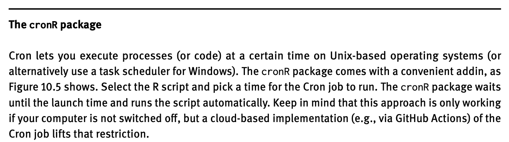

Automate work
Welcome to the tutorial of the Practice R book (Treischl 2023). Practice R is a text book for the social sciences which provides several tutorials supporting students to learn R. Feel free to inspect the tutorials even if you are not familiar with the book, but keep in mind these tutorials are supposed to complement the Practice R book.
Chapter 10 emphasized that we are not supposed to repeat our-self in
terms of writing code and I highlighted that R can be used to do the
boring stuff. To this end, we made dynamic reports with
rmarkdown and we focused on the process of creating and
sending them automatically (Allaire et al.
2022).
Unfortunately, we cannot build a document in a tutorial, but we can
level up your skills to automate work. We made only a graph to
illustrate the principle of dynamic reports in Chapter 10, but we can
further improve the automation process by writing our own functions for
this task. Thus, we will learn to automate the process of creating
graphs and explore purrr once more (Henry and Wickham 2022). In addition, I briefly
introduce packages that let us automate other boring tasks.
# Tutorial 8 needs the following packages:
library(dplyr)
library(ggplot2)
library(magick)
library(palmerpenguins)
library(purrr)
library(tesseract)Automate graphs

Suppose someone asked you to create a report with many descriptive
graphs. If the report contains many graphs - say a histogram for all
numerical variables - the chance is high that we start to repeat
ourselves in terms of code. You may create a customized plot with
ggplot2 (Wickham, Chang, et al.
2022), but for each variable we still need to copy the code and
then change the plot slightly. Such a copy and paste approach
makes the code messy and we repeatedly need to adjust each graph
manually if we find an error.
For this reason, I introduced the advantages of dynamic reports, but we can also make functions that help us to create graphs more efficiently. With functions, we minimize the urge to repeat ourselves. They make our work less error prone because if the function includes a mistake, the error would appear each time we call the function, making it easier to spot them. Therefore, our work becomes more flexible, because we have to change the code only in one place and repeat it over and over for an entire document.
Suppose you need to visualize all numerical variables from the
penguins data with a histogram (Horst, Hill, and Gorman 2022). We will use the
next code as an example to build functions. It is not important what the
plots actually looks like, as we can still adjust all kind of graphical
appearances and include such steps in the created function. Let’s keep
it simple to illustrate how the approach works. As a bare minimum let’s
pick a numerical variable (e.g., bill_length_mm) and give
the plot a title.
# Pick a variable and give a title# Pick a variable and give a title
ggplot(penguins) +
geom_histogram(aes(x = bill_length_mm)) +
ggtitle("Bill length")I already created the body of a function to build such a histogram
(hist_fun) and you need to add the code to create the
graph. First, insert the code from the last console. Next, we need to
adjust the input variable. There are different ways to use
ggplot2 in functions. Adjust the code and fill in
.data[[x]] instead of x, it will hand over the
column vector from the function call. As always, give it a try before
you consider the solution and check if the function is working.
# A function to create histograms
name <- function(variables) {
}
# Did it work?
hist_fun(penguins, x = "bill_length_mm")# A function to create histograms
hist_fun <- function(data, x) {
ggplot(data) +
geom_histogram(aes(x = .data[[x]])) +
ggtitle(paste("Var:", x))
}
# Did it work?
hist_fun(penguins, x = "bill_length_mm")Functions reduce our workload, but the approach is quite repetitive,
especially if we display each numerical variable with a histogram. Why
don’t we create one plot with a histogram for each numerical variable?
We used the DataExplorer package for this task in Chapter
3, but with your own function you will be able to create a plot in the
exact same way as you want them.
First we need to identify which variables of a data frame are
numerical. The select_if() function from dplyr
lets us pick variables under a specified condition (Wickham, François, et al. 2022). As the next
console shows, it returns variables which are double (numerical, factor)
if we insert the is.double (is.numeric;
is.factor) function.
# dplyr::select_if# dplyr::select_if
dplyr::select_if(penguins, is.double) |>
head()However, we need a vector with the corresponding variable names to
create the plot. Insert the select_if function into the
names() function to get the variable names.
# Only numerical input# Only numerical input
names(dplyr::select_if(penguins, is.double))Now that we have a vector with variable names and a function to
create histograms, enables us to use purrr (Henry and Wickham 2022). The map
function returns a list with the histogram for each input variable.
First, assign the results of the last console as
numerical_variables. Next, we apply the
hist_fun() for each input of
numerical_variables.
# Iterate with purrr# Iterate with purrr
numerical_variables <- names(dplyr::select_if(penguins, is.double))
plots_list <- purrr::map(numerical_variables, ~ hist_fun(penguins, x = .x))
plots_listFinally, use the plot_grid function from the
cowplot package to combine them all in one graph (Wilke 2020). The function only needs a
plotlist in order to combine all the plots from the created
list (plots_list) in one graphical output.
# Insert your plotlist# Insert your plotlist
cowplot::plot_grid(plotlist = plots_list)Now it’s up to you to combine these steps. Create a function
(all_hist) that takes all numerical variables from a data
frame, then create a histogram for each variable with purrr
and combine all into a single graph with cowplot. Finally,
check if the function works.
# Create a function that returns several histograms
all_hist <- function(data) {
return(plot)
}
# Did it work?
all_hist(penguins)# Create a function that returns several histograms
all_hist <- function(data) {
numerical_variables <- names(dplyr::select_if(data, is.double))
plots_list <- purrr::map(numerical_variables, ~ hist_fun(data, x = .x))
plot <- cowplot::plot_grid(plotlist = plots_list)
return(plot)
}
# Did it work?
all_hist(penguins)Let us create an error message and adjust the options to illustrate how to improve the approach. So far our function works only with numerical variables, but what happens if the data does not contain one? The first two variables of the penguins data are categorical which gives us the opportunity to inspect which error our function returns if there is no numerical input.
# What happens if there is an error?
all_hist(penguins[1:2])# What happens if there is an error?
all_hist(penguins[1:2])The error message is pretty obscure, but we can improve it: It should
warn us in a reasonable manner and abort the function. Consider the
numerical_variables vector. If there are no numerical
variables, it has a length of zero and the function is supposed to
abort.
# names_num is zero if the data has no numerical input# names_num is zero if the data has no numerical input
numerical_variables <- names(dplyr::select_if(penguins[1:2], is.double))
numerical_variablesThe cli package provides helpers for developing
command line interfaces and we can use the
cli_abort function from it (Csárdi
2022). It aborts the function call and returns a warning message
as the next console illustrates.
# CLI provides helpers for developing Command Line Interfaces
cli::cli_abort("What's the problem?")#> Error:
#> ! What's the problem?Insert the cli_abort() function together with an
if condition in the all_hist() function. Only
if the names_num vector has a length of zero, the
cli_abort function should abort the function call and
returns a warning.
# Add if and cli::cli_abort
all_hist <- function(data) {
numerical_variables <- names(dplyr::select_if(data, is.double))
if (condition) {
}
plots_list <- purrr::map(numerical_variables, ~ hist_fun(data, x = .x))
plot <- cowplot::plot_grid(plotlist = plots_list)
return(plot)
}
# Do we get an error?
all_hist(penguins[1:2])# Add if and cli::cli_abort
all_hist <- function(data) {
numerical_variables <- names(dplyr::select_if(data, is.double))
if (length(numerical_variables) == 0) {
cli::cli_abort("Input must be a double-precision vector.")
}
plots_list <- purrr::map(numerical_variables, ~ hist_fun(data, x = .x))
plot <- cowplot::plot_grid(plotlist = plots_list)
return(plot)
}
# Do we get an error?
all_hist(penguins[1:2])It goes without saying that we can further improve the function by adding and adjust the options that generates the plot.
For example, add the ncol option in the
plot_grid() function. It lets us determine the number of
columns used to plot the graphs. Don’t forget to insert the option also
in the function() and give a default value that suits your
purpose.
# Adjust the plot_grid function
all_hist <- function(data) {
numerical_variables <- names(dplyr::select_if(data, is.double))
if (length(numerical_variables) == 0) {
cli::cli_abort("Input must be a double-precision vector.")
}
plots_list <- purrr::map(numerical_variables, ~ hist_fun(data, x = .x))
cowplot::plot_grid(plotlist = plots_list)
}
# The all_hist with ncol
all_hist(iris, ncol = 4)# Adjust the plot_grid function
all_hist <- function(data, ncol = 3) {
numerical_variables <- names(dplyr::select_if(data, is.double))
if (length(numerical_variables) == 0) {
cli::cli_abort("Input must be a double-precision vector.")
}
plots_list <- purrr::map(numerical_variables, ~ hist_fun(data, x = .x))
cowplot::plot_grid(plotlist = plots_list, ncol = ncol)
}
# The all_hist with ncol
all_hist(iris, ncol = 4)Finally, one last thought about the themes. If we adjust the
theme() inside the function, the same styling rules are
applied. However, we can also create our own theme function
which increases the flexibility, since we can also apply the theme also
to other graphs.
Creating a theme is not complicated. We best start by using a
predefined theme and only adjust it where the theme does not fit for our
purpose. As the next console shows, the my_theme() function
relies on a ggthemes theme (Arnold
2021); to give you an idea how it works I only adjusted the text
size of the title and the caption. After we created the theme, we can
integrate it in the function or call it after we created the graph, as
the next console shows.
# Create a customized theme
my_theme <- function() {
ggthemes::theme_gdocs() +
theme(plot.title = element_text(size = 16)) +
theme(plot.caption = element_text(size = 10))
}
# Apply it where needed
plot <- all_hist(iris, ncol = 2)
plot + my_theme()Automate the boring stuff
Students in the social sciences learn R to apply statistics, but R helps us also to automate repetitive tasks. This last section does not necessarily have applied empirical research in mind, but it tries to raise awareness about how we can get the boring stuff done (with R and different packages).
The officer package

Till now we focused on PDF reports, but the officeverse
package encompasses several packages and functions to work with
Microsoft Office files. For example, the officer package
will help you to create and change all sorts of MS Office documents.
Suppose that a data set gets an update and we are supposed to do the same with the corresponding Word reports. There is one Word document for a long list of countries and we certainly do not want to make the update manually. For the sake of simplicity, suppose we only need to add a new page, insert a new headline, and provide an updated plot for each country. Therefore, we first need a new plot that we are supposed to add:
# New plot
plot <- ggplot(penguins) +
geom_histogram(aes(x = bill_length_mm)) +
ggtitle("Bill length")The next console shows how such a minimal but effective update may
look like based on a simple workaround. First, we read the document with
read_docx; next we add a new page
(body_add_break), a new header (body_add_par),
and the plot (body_add_gg). Finally, we are
able to export the new document with the print() function
and the target option.
library(officer)
# Read and update my_doc
doc_updated <- read_docx(path = "my_doc.docx") |>
body_add_break(pos = "after") |>
body_add_par("Updated results", style = "heading 1") |>
body_add_gg(value = plot, style = "normal")
# Save updated doc
print(doc_updated, target = "doc_updated.docx")Of course, this was a simple workaround for illustration purposes.
Consider the package website for more information about the
officeverse.
The pdftools package

Say you have a bunch of PDF files and you need to combine them in a
single file. Or the other way around, you have a large PDF file but for
some reasons you need to split them. Certainly there are different
software solutions available, but your time is too precious to add each
page manually or apply another repetitive task to the file(s). The
pdftools and the qpdf package has
corresponding functions to combine, split, and perform further functions
when working with PDF files (Ooms 2022a,
2022b).
# Join several pdf files into one
qpdf::pdf_combine()
# Split a single pdf into separate files, one for each page
qpdf::pdf_split()In the case of image files, consider the magick package
(Ooms 2021).
The magick package

Suppose you have many images that are saved a PDF file and you need
to convert them into png files. As before, you can open all
files in a graphic software and export each of them manually. Or you can
use the magick package to read the files and convert them
into a certain format, as the next console highlights. The package
provides many features to read, adjust, and convert image files.
Consider the package documentation because it outlines more features
that I can introduce.
# Convert Images
img <- image_read_pdf("figure.pdf")
# Write as PNG
image_write(img, "output.png")Chapter 10 introduced packages and features to automate work.
Certainly, we cannot automate all kinds of work with R, but keep in mind
that there are often solutions are available to get recurring tasks
done, before you start to repeat yourself several times. I did not
introduce the magick package only because of it lets us
convert images. I did so because it has many features to work with
images and sometimes you will be surprised about the numerous
possibilities of R and its landscape.
Suppose you want to analyze texts, but they are only available as an
image files. I made a screen shot of an info box from the Practice R
book. The image shows the first lines of the cronR info
box.

The magick package helps us to extract this text from
the image files. As the next console shows, we need to read the image
first before we can extract the text.
The image_ocr() function (optical character recognition)
scans the file and extract the data. The functions relies on
tesseract, which is an open OCR engine that supports over
100 languages. To make the output a bit easier to read in the console, I
used the stringr package, which I will introduce in Chapter
11 in detail.
# Extract text via OCR
library(tesseract)
library(stringr)
txt <- image_ocr(img)
text <- str_split(txt, "\n")
text <- as_vector(text)
head(text)
Instead of repeating yourself, use your time wiser and learn
something new about R and its environment. How about D3 (Data-Driven
Documents), which is a JavaScript library to create interactive
visualizations for the web. The r2d3 package let you
integrate D3 into R (Strayer, Luraschi, and
Allaire 2022). The next console illustrates that the package runs
a JavaScript file (voronoi.js) and returns an example made
by Mike Bostock.
library(r2d3)
# voronoi.js is based on: https://bl.ocks.org/mbostock/4060366
r2d3(d3_version = 4, script = "d3/voronoi.js")If you are not in the right mood to learn something new, how about
playing an old school video game? The Rcade package lives
on GitHub only, but thanks to Romain Lesur you can play Tetris, Mario,
or Pacman directly from R.
# devtools::install_github('RLesur/Rcade')
# library(Rcade)
Rcade::games$PacmanThus, be curious and don’t miss the opportunity to automate work that does not need your full attention, because it will also improve your skills. In a similar sense, consider to write your own R package if you have invested a lot of time and effort in your work. Depending on your goal, this might not be necessary but all the functions would be available if you combine them in a package. Moreover, I couldn’t resist to highlight the possibility one more time, especially regarding the American Chopper meme.

Don’t let fancy packages such as ggplot2 discourage you
when considering to create your own package for the first time: you and
your ideas are worth the time and effort. Keep that in mind if you start
fooling around with the idea.
Summary
Keep the following R functions and packages from Chapter 10 in mind:
- Keep distinct/unique rows (
dplyr::distinct) - Concatenate strings (
paste) - Format and interpolate a string (
glue: Hester and Bryan 2022) - Render R Markdown (
rmarkdown::render) - Find your files (
here:: Müller 2020) - Control flow (e.g.,
if, for loop) - Play a short sound (
beepr: Bååth 2018) - Automatic reporting of R objects (
report:: Makowski et al. 2022) - Send an email (
blastula: Iannone and Cheng 2020) - Interpret input text as Markdown-formatted text
(
blastula::md) - List the Files in a directory/folder (
list.files) - Apply a function to each element of a vector
(
purrr::map)
Finally, a link to download this tutorial as PDF file.
References